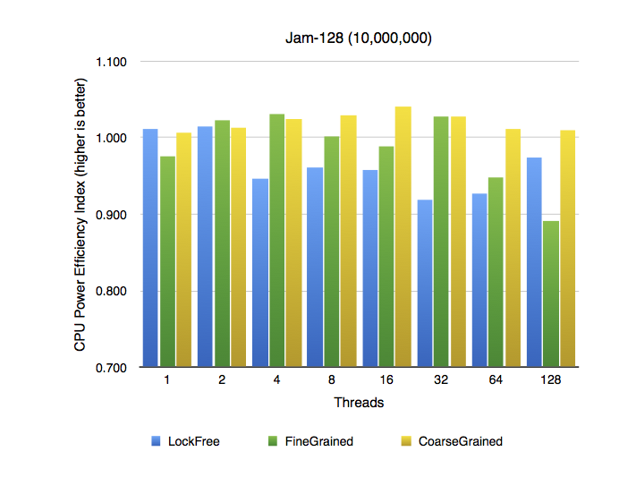

A project by Dave Cummings and Stephen Bly, and a finalist in CMU's Spring 2014 Parallelism Competition. Check out the other awesome submissions!
It's a race!
When multiple threads are making concurrent modifications to a shared data structure, a typical strategy is to use a lock so that only one thread can modify the structure at a time. We’re exploring alternative thread-safe schemes: fine-grained locks, which lock only the most necessary parts of the structure; and atomic memory operations, which allow us to forego locks altogether. Though each of these approaches has its appeals and its drawbacks, we have found lock-free structures to be sensationally faster under conditions of high contention. And perhaps even more important than speed, we’ve discovered lock-free structures to be more energy-efficient than their counterparts.
Background
The most fundamental element to prevent concurrent threads operating on the same memory from scrambling one another's data is to use a lock. The status of the lock gets checked and then modified whenever a thread wants to access or change the protected data, and then unlocked upon completion. The terms "coarse-grained" and "fine-grained" refer to general strategies of using locks: whether to have very few locks limiting access to large portions of memory or to have many locks that each limit access to a small portion of memory.
We began our investigation of lock-free linked lists by reading the papers recommended in the class slides on lock-free data structures. We read papers by Michael, Fomitchev and Ruppert, and Harris. We got our idea for looking at energy usage from Hunt, Sandhu, and Ceze.
Reading these papers showed us just how difficult lock-free linked lists are to implement correctly. Many of them even had errors in their implementation that were pointed out only after the paper had been published. After reading all of them, we decided on implementing the linked-list described in Harris. It was easy enough to understand (though still considerably more complex than its lock-based counterparts), and boasted significant performance improvements.
Methodology
In comparing the performance of different thread-safe list implementations, it was important to us that using the lists was practical from the perspective of an engineer and not just from an efficiency standpoint. It was important to us that the lists inherit from a common interface that declared what operations could be performed, and that developers (ourselves included) could call the same function on any list implementation and expect the same result. It was also important that the lists support generics, without which our lists have basically no real-world utility.
...vector<List<elem_t>*> lists; lists.push_back(new CoarseGrainedList<elem_t>()); lists.push_back(new FineGrainedList<elem_t>()); lists.push_back(new LockFreeList<elem_t>()); bool isSane = true; for (unsigned int i = 0; i < lists.size(); i++) { isSane &= test_sanity(*lists[i]); } if (isSane) { cout << "Sanity tests passed!"; } else { cout << "Sanity tests failed! #define DEBUGGING to run in debug mode."; }...} bool test_sanity(List<elem_t>& list) {...}
Testing
We designed tests specifically to test extreme situations and exaggerate the advantages and disadvantages of each list implementation. The final test suite breaks down into three categories:
Sanity tests
The quickest to run and the first to fail in the event of a glaring implementation mistake. Sanity tests were particularly helpful as we gained familiarity with inheritance and polymorphism in C++. By having all the thread-safe list implementations inherit from the same "interface" we could simply maintain a collection of lists and pass them to the same test functions. In addition to cleanliness and adhering to good software engineering practices, this meant that any change to a test was automatically reflected for each of the list implementations with which it was run.
Size tests
Helped confirm the list invariants were maintained. Size tests make only insertions, no deletions, so list accesses become slower, and we expected lists with high per-node logic (*ahem* FineGrained) and coarse mutual exclusion to really take a beating in these tests. Size tests push these lists to the limits of their practicality and give us an opportunity to measure what those limits are.
Jam tests
The opposite of size tests, jam tests perform millions of insertions and deletions without the list exceeding a small size. For each insertion performed, the test suite makes a removal immediately afterward. We designed jam tests to measure how well the implementations perform under pressure, when the number of concurrent operations attempted at any given moment may even exceed the number of elements in the list. Jam tests also help verify correctness; they can't tell us where our code might have gone wrong, but they can tell us to focus on the interplay between insert and remove.
Environments
Our primary test machine was a mid-2013 MacBook Air ("MacBookAir6,1") equipped with a dual-core i7-4650U. We also ran tests on remote machines, specifically a workstation equipped with a 6-core Xeon W3670 and a 32-CPU instance on Pittsburgh Supercomputing Center's Blacklight. We later allude to results from these tests, but over the course of the project we found ourselves less and less reliant on remote machines and more immersed in tests run on the Mac. The big advantage was being able to deploy instantly, not having to wait in a queue to run the compiled code, and not having to share precious CPU resources with the rest of the School of Computer Science. As we progressed, our software became more specialized for OS X, and so running new tests on these remote machines became impossible.
Monitoring
For monitoring elapsed time, we used CycleTimer, which was provided by the 418 course staff for multiple assignments. CycleTimer directly counts the number of number of CPU ticks to get as granular reporting of time as possible. CycleTimer executes unique logic for each system. For example, for x86-64, CycleTimer makes an inline assembly call to read the tsc register.
To monitor power, we had to develop our own tools. The result is not only specific to OS X but actually exclusive to MacBook Airs (MacBooks Air?) shipped since June 2013.
Every Intel-based Mac uses System Management Controller to manage auxiliary internal hardware components, primarily to adjust fan speeds in reaction to changes in intnernal temperature. Because the operating system is dependent on certain bits of information maintained by SMC (like knowing to shut down if the CPU overheats) the subsystem can be queried by the kernel using IOKit, Apple's API for writing device drivers. Apple has absolutely zero documentation about interfacing with SMC, and with good reason: you can set values just as easily as you can query them, so in theory you could, say, up the voltage on your CPU and completely fry the system.
A developer known only as devnull created an interface for making read-only calls to SMC, and we've modified it to query the power sensors on a MacBookAir6,1. Every model of Mac has a different assortment of sensors and (perhaps to add security through obscurity) each sensor is identified by a four-character key that's unique to each model. The mappings from keys to sensors aren't published anywhere; developers have had to feel around to find them and new keys are still being discovered. The folks at Bjango developed iStat Menus (pictured right) and hard-coded known SMC keys. By decompiling the app, we were able to extract the keys corresponding to power sensors for our MacBook Air test machine. Some further digging into the decompiled source revealed that the recent MacBook Air is the only Mac for which the keys are known for the power sensors on the SSD and DRAM. (The SMC keys for the CPU power sensor are known for most recent Macs.)
function +[MacBookAir6_1 supportedSensors] {
var_64 = [[NSMutableArray alloc] init];
xmm0 = intrinsic_xorps(xmm0, xmm0, *objc_cls_ref_NSNumber, *0x1001bac48);
r12 = [__got__objc_msgSend() retain];
xmm0 = intrinsic_movsd(xmm0, *0x100133070, *objc_cls_ref_NSNumber, *0x1001bac48);
r13 = [__got__objc_msgSend() retain];
rbx = [var_64 dictionaryWithObjectsAndKeys:@"PSDC", @"key", @"SSD", @"name"];
We packaged functions for getting system time and power usage statistics into a singleton class called Monitor. When running with the monitor, a few things are different from our standard test suite. First, we use pthreads instead of OpenMP, since Clang does not natively support OpenMP. We divide a test's input array into evenly-sized contiguous chunks, which closer resembles OpenMP static scheduling rather than the default dynamic. Additionally, the act of observing can interfere with the tests themselves, since the monitoring tasks run in a thread that runs alongside the worker threads. We found evidence of this interference, since on average every single test ran slower with power monitoring off than with it on; however, the difference in speed was typically less than 1% and execution time was always within the standard deviation of the length of corresponding unmonitored tests.
An important caveat: since Apple offers no documentation on SMC, we don't have a reputable source promising validity of what it reports. We found that when the CPU is running at peak, the reading from the power sensor reported seems to change only once every 1.38 seconds, even though the monitoring thread can poll the SMC at a granularity as fine as 16 milliseconds. At peak, these changes are slight, often by fractions of watts. It could well be that inside that 1.38-second interval SMC will only adjust voltage and current when the workload changes drastically, and we have some data to suggest SMC might have a much faster reaction time: when we inserted the occasional nanosleep into our code, we sometimes saw changes in wattage as frequent as the SMC was polled. And while the SMC could be continuously adjusting wattage and only reporting the change every 1.38 seconds, it's also possible that during peak, when workloads stay consistent, the SMC keeps the CPU power at about the same level.
Results
Lock-free linked lists ("LockFree") outperformed its rivals in almost every single iteration of every single test, often by a wide margin. Perhaps more interesting than the times it outperformed are those when it underperformed. The graph below shows just how big LockFree's margin of victory is.

In this jam test with a fixed list size of 16 on 10,000,000 insertion/deletion iterations, LockFree performs astoundingly better in a multithreaded context. It even performs better in the single-threaded context, but the difference is not as exaggerated. Even more impressive than the absolute speed differences is how well LockFree scales when running 128 parallel threads on a dual-core CPU; the blue line stays practically flat. We attribute this to the impressive speediness of the atomic __sync_bool_compare_and_swap, which keeps overhead low during traversal and swaps.
In this size test on 100,000 iterations, we see one of the few instances in which LockFree actually does worse than one of its rivals. LockFree's traversal and read/write logic is actually slightly more expensive per thread than CoarsGrained's simple lock-once-and-iterate. FineGrained appears to scale well compared to its single-threaded execution but still lags behind its rivals.

Not only does LockFree execute way, way faster, it consumes even less electricity, as shown in the graph above…
…however, if we look at performance-per-watt, as shown on this adjusted index, we see that since all implementations basically use 100% of the CPU, consumption is primarily just a function of execution time.
Future Work
Hashtables
We wanted to further improve the usefulness of our key-value lists. To this end, we decided on trying to implement a hashtable (also supporting generic types and hash functions), which is a pivotal computer science data structure that supports much faster operations than linked lists. We spent a good deal of time working on using our lock-free lists to implement lock- free hashtables. In particular, we would use the lock-free lists to chain elements that collided in the table. Buckets in the hashtable were already independent and needed no synchronization.
While we wrote an almost-complete hashtable implementation, we were unable to test our code because of compiler and linker errors that neither of us could figure out (or even understand) after a day of debugging. Due to time constraints, we ultimately decided to focus on other things that we could make tangible progress on. However, we still feel that lock-free hashtables have the potential to be extremely useful to multi-threaded applications and will one day be in wide-spread use.
Sets
Most implementations of sets, which support operations like union and intersect, are implemented using sorted linked lists because of their built in filtering of duplicates and the ability perform many set operations inexpensively. These operations also have the potential to be highly parallelized (if you had infinite execution contexts you could, say, assign each one a value from set A to find in set B, and thus achieve constant span.) This would have been another interesting application to explore, and one that is highly practical.
References
- Kayvon Fatahalian: Fine-Grained Sync and Lock-Free Structures. 2014 (Carnegie Mellon University)
- Nicholas Hunt, Paramjit Singh Sandhu, Luis Ceze: Characterizing the Performance and Energy Efficiency of Lock-Free Data Structures. 2012 (University of Washington)
- Scott Michael: Simple, Fast, and Practical Non-Blocking and Blocking Concurrent Queue Algorithms. 1996 (University of Rochester)
- Mikhail Fomitchev, Eric Ruppert: Lock-Free Linked Lists and Skip Lists. 2004 (York University)
- Timothy Harris: A Pragmatic Implementation of Non-Blocking Linked Lists. 2001 (University of Cambridge)
Our proposal is available here.
Acknowledgements
Equal work was performed by both project members.
Huge thanks to Kayvon Fatahalian for guidance and support. Thanks also to Robert Esser and Duane Merrill for feedback and suggestions for future work.